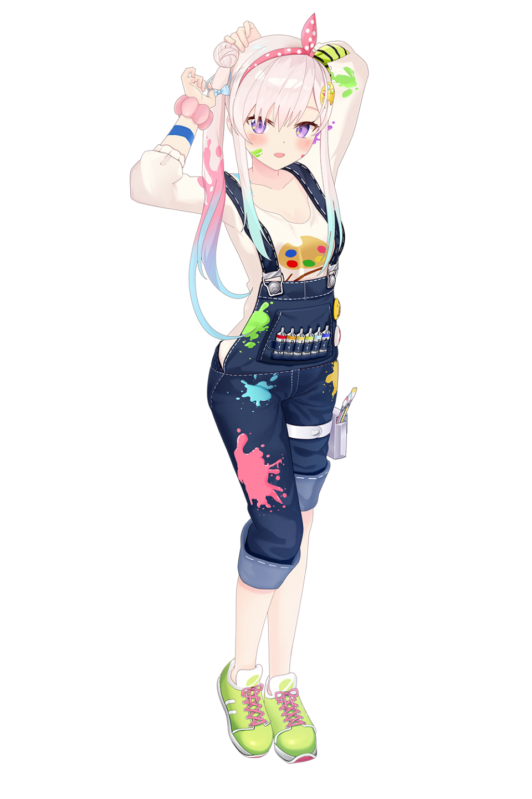
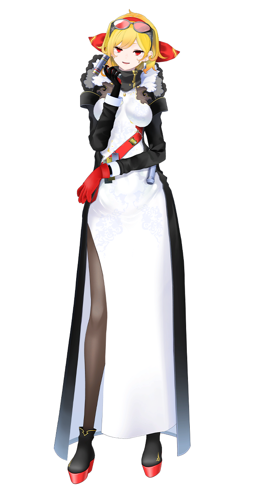

Hololive ID Members
#1 GEN
Ayunda Risu
アユンダ・リス
"Hewwrroo everyone~!! Purupuru ganbari Risu ~!" Seorang gadis tupai dari hutan ajaib. Dia tersesat di dunia manusia, tetapi karena keadaan tertentu, dia akhirnya tinggal di rumah seorang kakak perempuan yang baik hati. Untuk membalas budi, dia memutuskan untuk menjadi VTuber. Dia suka melakukan lelucon pada orang, pemalu dengan orang baru, dan suka menggoda penontonnya. Tawanya juga merupakan salah satu ciri khasnya.
Moona Hoshinova
ムーナ・ホシノヴァ
"Moon Moon~ Moona Dayo!" Seorang mahasiswi yang bekerja sebagai model dan idola, tetapi kemudian tertarik untuk menjadi VTuber juga. Kelihatannya tenang, tapi aku tidak meyukai hal horor. Ini jarang terjadi, namun kepribadian lain Moona "Hoshinova" terkadang muncul, lalu memamerkan suara Onee-san nya. Pantau terus streamnya Moona!
Airani Iofifteen
アイラニ・イオフィフティーン
""IOFORIA~! OBISA!" Pagi semua! Aku adalah Iofi sang alien cerdas kesayanganmu dari hololive Indonesia, senang bertemu denganmu!" Seorang putri alien yang kabur dari rumah lalu datang ke bumi dan jatuh cinta pada budaya bumi, terkadang suka menggoda penonton dan menjadi Iomama yang baik bila fans membutuhkannya. Kadang tergila-gila pada game gacha.
#2 GEN
Kureiji Ollie
クレイジー・オリー
"ZOMBANWA!! SUPER KAWAII ZOMBIE IDOL, KU KU KU KUREIJI OLLIE DESU~!!" Seorang gadis SMA zombie bangkit dari kuburnya. Dia menuju rumah, mengandalkan ingatan yang disimpan saat ia masih hidup. Setelah sampai, ia menyadari bahwa sudah berubah menjadi toko ramen! Karena hal itu, untuk mendapatkan rumahnya kembali, ia memutuskan untuk menjadi seorang VTuber. Ollie memiliki kecenderungan besar untuk berteriak. Selalu turunkan volume mu ketika ia streaming.
Anya Melfissa
アーニャ・メルフィッサ
"Good day! This is Anya Melfissa from hololive ID 2nd Generation" Senjata kuno yang dikenal sebagai "Keris", dia diberikan bentuk manusia melalui ritual mistis yang dilakukan oleh tuannya. Dia hampir selalu tidur atau bermain game. Hidup sendirian begitu lama telah membuatnya cenderung apatis terhadap hal-hal dan orang-orang yang tidak dia minati, tetapi ketika berbicara tentang hal-hal yang dia sukai, dia bisa sangat kekanak-kanakan dan bersemangat.
Pavolia Reine
パヴォリア・レイネ

"Perhatian, sang putri merak yang tertiup angin, aku Pavolia Reine dari hololive ID" Putri merak. Saat belajar di akademi sihir, dia terlibat sebuah insiden dan dipindahkan ke dunia manusia. Sejak itu, dia tidak bisa menggunakan banyak sihirnya. Sangat suka manisan, tapi lemah dengan makanan yang terlalu pedas. Pada pandangan pertama, dia tampaknya tipe yang elegan, tetapi orang-orang yang dekat dengannya akan tahu bahwa dia memiliki kepribadian yang lebih norak.
#3 GEN
Vestia Zeta
ベスティア・ゼータ
"Mission Start! Halo namaku Vestia Zeta secret agent dari Hololive ID Gen 3" Dia adalah rekrutan misterius ke-7 dari unit arsip rahasia yang memiliki lisensi penuh untuk mengumpulkan data virtual. Meskipun dia seorang pemula yang menjanjikan, juga dikenal sebagai codename V.7, dia jadi kikuk saat segala sesuatunya tak berjalan sesuai dengan manual. Itu awalnya adalah misi sendiri untuk menyusup ke dunia virtual, tapi sekarang dia menemukan kenyamanan disini. Akankah misi ini berakhir dengan membawanya ke takdir yang baru?
Kaela Kovalskia
カエラ・コヴァルスキア
"Hi Semuanya!" Setelah mengambil alih bengkel guru pandai besinya, dia merasakan kurangnya kebahgiaan / kegembiraan dalam hidupnya. Jadi, dia memutuskan untuk bebas dan melakukan perjalanan untuk menemukan bahan pandai besi yang langka, salah satunya dikabarkan berada di bawah bangunan "Group Idola" tertentu di kota. Dia juga suka menantang dirinya dan memiliki selera yang aneh dalam hal makanan!
Kobo Kanaeru
こぼ・かなえる

"Bo Kobo Kobo Kanaeru at your service, let me be your shine to shine your day ehe!" Seorang gadis periang yang tinggal di ruangan paling atas mercusuar, dia sebenarnya adalah gadis keturunan dukun hujan terkuat dari daerah itu. Dia memiliki potensi besar untuk mengendalikan hujan, tetapi dia tidak suka melakukannya sebagai tugas. Untuk memenangkan kembali gelar Master hujannya, dia perlu membuktikan kepada keluarganya bahwa dia dapat mempertahankan layanan dukun hujan mereka.
MUSIC
Beberapa lagu yang dirilis oleh member Hololive Indonesia
Sing Out
Ayunda Risu
Backseat
Kaela Kovalskia
You're Mine
Vestia Zeta
Everlasting Knife
Anya Melfissa
1:15 AM
Ayunda Risu
Who's Toxic? It's You
Moona Hoshinova
Oh! Asmara
Kobo Kanaeru
NEW[zom]BIE!!
Kureiji Ollie
Illusion Night
Pavolia Reine
Q&A=E
Airani Iofifteen